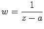

Inhalt Index DeskTop Bronstein

 Funktionentheorie Funktionen einer komplexen Veränderlichen Analytische Funktionen
Funktionentheorie Funktionen einer komplexen Veränderlichen Analytische Funktionen


Wenn eine Funktion w = f(z) in der Umgebung eines Punktes z = a analytisch ist, d.h. im Innern eines beliebig kleinen Kreises mit dem Mittelpunkt  , ausgenommen a selbst, dann hat f eine Singularität in a. Es gibt drei Typen von Singularitäten:
, ausgenommen a selbst, dann hat f eine Singularität in a. Es gibt drei Typen von Singularitäten:
| Beispiel A |
|
Die Funktion  besitzt im Punkt a einen Pol. |
| Beispiel B |
|
Die Funktion w=e1/z besitzt im Punkt 0 einen wesentlich singulären Punkt (s. Abbildung). |